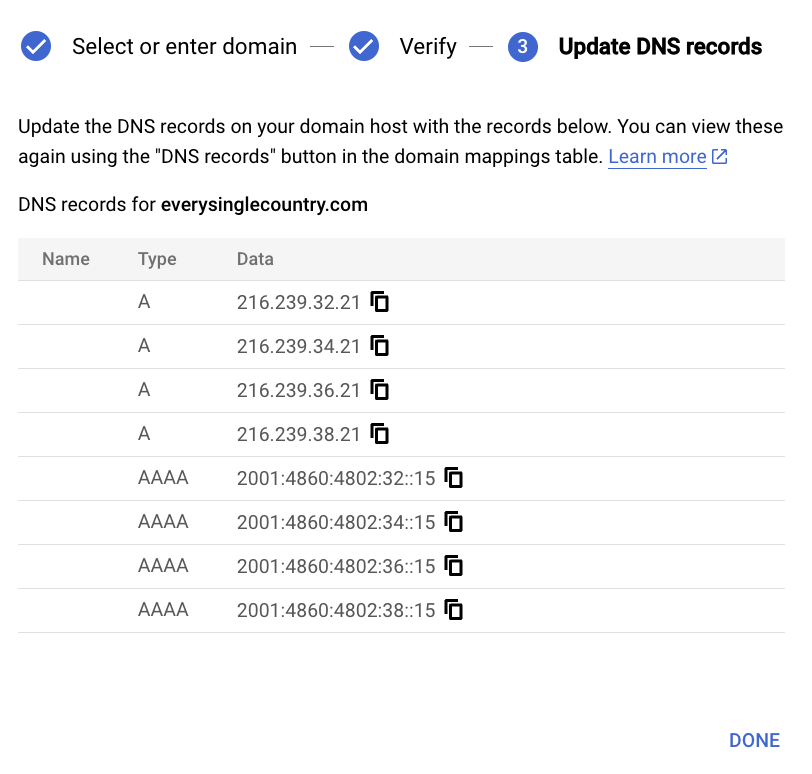

Assign a Custom Domain to a Google Cloud Run Service
In this post, we’ll guide you through assigning a custom domain to a Google Cloud Run Service, such as the one we deployed in our previous post. Using Google Cloud Run’s Domain Mappings feature, we’ll map your Shiny app to a memorable domain name like “everysinglecountry.com”.
Prerequisites
Before we begin, ensure that:
- Your Shiny app is deployed in one of the supported regions for Domain Mappings.
- You have already purchased a domain. For this example, we bought “everysinglecountry.com” at Porkbun for $11.06/year. You can use any registrar as the steps are similar.
Let’s get started!
On Google Cloud Platform (GCP)
- Log in to the Google Cloud console and open the Navigation menu (three horizontal lines icon).

- Select “Cloud Run”.
- Click “MANAGE CUSTOM DOMAINS”.
- Click “ADD MAPPING”.
- Select your service, such as “everysinglecountry”.
- Click “Cloud Run Domain Mappings”.
- Enter your domain name (e.g., “everysinglecountry.com”) and click “CONTINUE”.
- Click “VERIFY IN SEARCH CONSOLE” to validate ownership.
- Enter the domain name in the “Domain” panel, and click “CONTINUE”.

- Ensure the selected record type is “TXT”, then copy the TXT record (“google-site-verification=…”).
On Your Domain Registrar (Porkbun in This Example)
- Keep the GCP tab open. Open Porkbun and click “DNS” for your domain (e.g., “everysinglecountry.com”).
- Add a “TXT” record by pasting the value from Step 10 into the “Answer” field, then click “Add”.

- Keep the Porkbun tab open. Return to the GCP tab and click “VERIFY”.
- Once ownership is confirmed, you’ll see the message “Ownership verified”.
- Click “REFRESH”.
16.Click “CONTINUE”.

Adding DNS Records.
- In the GCP tab, you’ll see the required DNS records listed. Copy each record one by one (starting with the “A” records).

- Switch to the Porkbun tab. Before adding the new DNS records, remove any existing “ALIAS” and “CNAME” records by clicking the trashcan icon to the right of each entry.
- Add the “A” records. For each record, select “A” as the “Type”, enter the corresponding IP address into the “Answer” field, and click “Add”.
- Next, add the “AAAA” records. Follow the same process, selecting “AAAA” as the “Type” and pasting the corresponding values from the GCP tab into the “Answer” field.
- In this example, there are a total of 8 DNS records to add. After adding all the DNS records in Porkbun, your configuration should look similar to this:
- Go back to the GCP tab and click “DONE” to close the DNS records list. Now, you’ll need to wait for DNS propagation. This process can take a few minutes to several hours, depending on your domain registrar and internet service provider. In this example, it took one hour, but it can be shorter or longer.
- Once the DNS propagation is complete, you’ll see a green checkmark next to your domain in the GCP Domain Mapping panel. This indicates that your custom domain is successfully linked to your Cloud Run service.
Congratulations! Your Shiny app is now accessible at its new custom domain, providing a professional and branded experience for your users.
Enjoy your new setup!